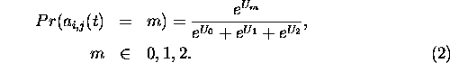

Each individual chooses the action which maximizes her expected utility for the current period given their adaptive expectations about the actions of others. We will explore two solutions to the decision problem. The simplest just selects actions by comparing the respective utilities. An alternative allows for experimentation in the sense that the action with highest expected subjective utility will take place not necessarily, but with some probability. The utilities from all actions are weighted exponentially and influence the probability of realization through the formula
